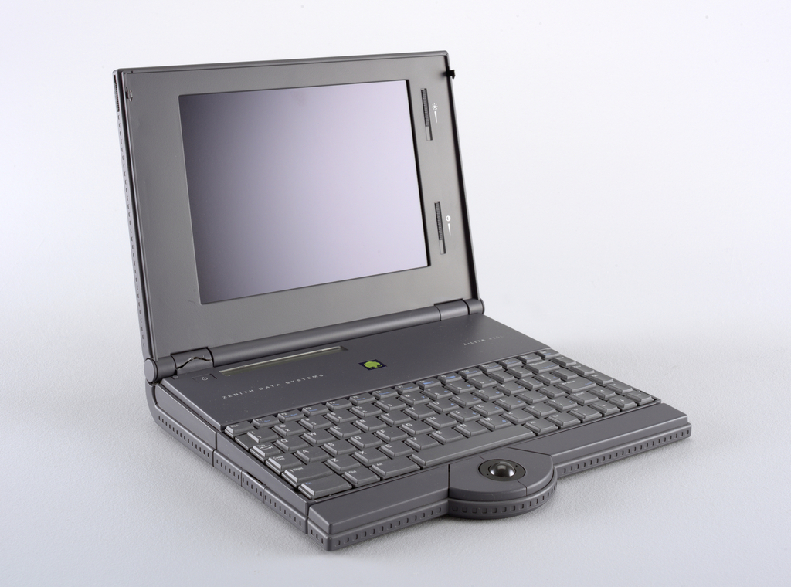
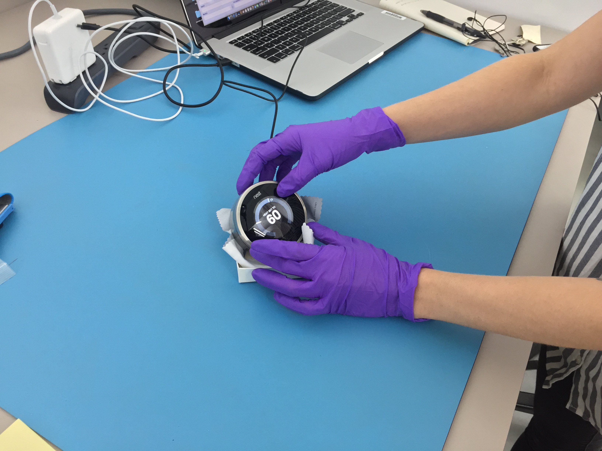

Designing the Future of Design
A Vision for Collecting Digital Design at the Cooper Hewitt, Smithsonian Design Museum
! important;
This report is open source. We welcome and encourage edits, corrections, and additions in the form of pull requests and issues on GitHub.
As well, this report is licensed under a Creative Commons Attribution-ShareAlike 4.0 International License.
Imagine if you will, fifty years from now, a class takes a field trip to the Cooper Hewitt, Smithsonian Design Museum to see an exhibition dedicated to the technologies designed in 2018: smartphones, laptops, tablets, smart-home assistants. The functions of these objects are readily apparent to us today, but what would they see in the future? And not only what, but how? How would they experience, touch, and interact with the exhibit? How would they understand the technologies that shaped our world?
How do museums’ traditional acquisition, curatorial, and conservation practices need to change and evolve in order to facilitate this vision of the future?
This is precisely the question posed by the Cooper Hewitt, Smithsonian Design Museum’s Digital Collections Materials Project (DCMP). For nearly two years, the institution has been engaged in an ambitious project to explore this topic by interrogating its past.
The Cooper Hewitt has been collecting digital objects of design for decades, including personal computers, software, interactive robotic devices, and personal electronic devices. This is important work, and not just as a means of preserving cultural heritage and design history. The upheavals and revolutions in technology over the last half century have inspired a conversation about the impact of digital technology on society and the lived human experience; without an authentic historic record of what these changes looked like, and how they were implemented, we will not be able to think critically about our future.
In the field of cultural heritage preservation, there are two areas of research and practice that can help inform the way we consider the acquisition, care, and exhibition of digital design objects. First, there is “digital preservation.“ Digital preservation concerns itself with the long-term storage and protection of digital material, often that which is collected by libraries and archives: books, periodicals, web content, special collections, and so on. The second area is “time-based media art conservation.“ Originating in museums, it is concerned with the conservation of works of art that employ technologies like film, video, sound recording, and software as artistic materials. Digital preservation and time-based media conservation are highly interdisciplinary, often overlapping with and borrowing methodology from each other. Practitioners in both fields are on occasion faced with the task of preserving digital design materials. For instance, at the Museum of Modern Art, time-based media conservators have been responsible for several video games and digital fonts collected by the museum’s architecture and design department. The Canadian Center for Architecture has been considering for some time now how to collect and preserve digital architectural archives, which include computer-aided design files. The San Francisco Museum of Modern Art has also spent a considerable amount of time grappling with the challenge of conserving hybrid “physical-digital” design objects like the iPhone, Google Glass, and the Macintosh 128k, just to name a few.
The fact is, however, that there has never been a comprehensive effort by a museum that is purely focused on design to consider the peculiarities and logistics of collecting and preserving digital material. There is no existing precedent that thoroughly establishes a philosophy, not to mention a methodology or a set of best practices, for collecting and preserving design material that is digital or physical-digital in form.
It is in this context and for this reason that in 2016 the Cooper Hewitt, Smithsonian Design Museum launched DCMP. Our mission was carried out in two phases: first, we conducted a complete survey of the museum‘s collection to compile a list of what objects could be considered digital or physical-digital, and to document their present condition both functionally and contextually. That is, did that object work and, if so, did the museum have the necessary components to run it?
The second phase involved a series of in-depth case studies, each delving into the complex preservation challenges of a specific object that had been identified in the survey. We sought to fully investigate the manner in which these objects were originally collected, document their present state, cultivate a deep expertise of their constituent materials, extrapolate inherent preservation risks, and establish reusable techniques and methodologies for dealing with similar objects in the museum’s collection. This, we hope, can provide a vision as well as a roadmap for how these objects may be authentically and safely exhibited in the future.
The objects selected for the series of case studies were: the Free Universal Construction Kit designed by Golan Levin, a never released functional IBM prototype called the Leapfrog, the Motorola Envoy, the GRiD Compass laptop, the NeXTcube computer, the iOS application Planetary, and an interactive robotic device called the Sketchbot.
This report is the culmination of the DCMP. It summarizes the challenges found over the course of the survey and case studies, reviews the solutions and methodologies developed, and articulates a vision of how the Cooper Hewitt, Smithsonian Design Museum can play a critical part as a leader in the conservation of digital design materials.
REVIEW OF THE CHALLENGES
We begin with an overview of the numerous difficulties that we encountered during the course of the case studies. In many ways, the challenges of conserving a museum’s digital design collection parallel the challenges found in the fields of digital preservation and time-based media conservation. In this study, we do not want to reinvent the wheel, but rather to build on the work of these disciplines and illuminate the unique complications presented by the intersection of design, the manufactured object, and a seemingly indexical digital collection.
HARDWARE DEGRADATION, FAILURE, AND LOSS
The first and most pressing challenge is the obsolescence and degradation of hardware collected by the museum. As this report will discuss, software obsolescence is also a major concern, but it is driven and dictated by the decay of the physical objects on which that software is supposed to run.
Electrolytic capacitors are cylindrical electronic components that are extremely common in electronic devices. These capacitors are filled with a liquid, or sometimes gel, which stores electrical energy. Generally speaking, the higher-power electronics are, the larger their capacitors will be. Over the course of time, even if they are not being used, the electrolytic capacitors found inside every kind of electronic device—from personal computers to cathode ray tube monitors to radios and televisions—will bulge and eventually leak their encased liquid, which is a corrosive material.
Hardware failure can be exacerbated by more than time. It is not uncommon for design museums to collect digital design objects that have physical components that museum visitors interact with. In addition to suffering from the usual hardware and software obsolescence, these kinds of public-oriented hardware will wear down and break due to repeated contact with museum visitors. Such hardware places a higher than usual burden on audiovisual technicians, registrars, art handlers, conservators, and other museum support staff.
STORAGE MEDIA OBSOLESCENCE
It is no great revelation that digital storage media does not last forever. Considering the extent to which it has been covered within the fields of digital and time-based media conservation, this is something of a commonplace. However, the full implications of this obsolescence have not been fully explored in the context of design collection until now. Devices that were acquired by design museums two decades ago—long before time-based media conservation and digital preservation best practices were established—may not have undergone systematic, bit-level preservation of their storage media.  The more time passes after an object is collected and its storage media is not stabilized (whether in the form of a disk image or other medium-appropriate preservation format), the more likely it is that the equipment required to interface with the given storage medium has become incredibly rare or perhaps completely unavailable. For instance, with the tools readily available to museum conservators and digital archivists today, it is quite difficult to produce a disk image of a 2.5 inch SCSI hard drive due to the relatively short lifespan of this format. We must rely on highly specialized data recovery services for such media.
The more time passes after an object is collected and its storage media is not stabilized (whether in the form of a disk image or other medium-appropriate preservation format), the more likely it is that the equipment required to interface with the given storage medium has become incredibly rare or perhaps completely unavailable. For instance, with the tools readily available to museum conservators and digital archivists today, it is quite difficult to produce a disk image of a 2.5 inch SCSI hard drive due to the relatively short lifespan of this format. We must rely on highly specialized data recovery services for such media.
The field of time-based media conservation has already begun to explore the implications of the fact that cathode ray tube monitors are no longer manufactured. Conservators, building on knowledge from video engineers and TV repair technicians, have established techniques for the maintenance, care, servicing, and repair of cathode ray tube monitors that are used in video art. Design collections, however, are likely to contain significant numbers of cathode ray tube monitors that were designed for use with personal computers. These monitors vary greatly in color, space, size, shape, resolution, and dimensions, and the standards and practices borrowed from the broadcast industries do not directly translate to their maintenance and care.
These monitors vary greatly in color, space, size, shape, resolution, and dimensions, and the standards and practices borrowed from the broadcast industries do not directly translate to their maintenance and care.
SOFTWARE OBSOLESCENCE
Software obsolescence is an unending challenge for digital design collections. Even if software does not, at its time of creation, appear to have any significant dependencies on particular hardware, external libraries, or modules, the fact is that software will always be inevitably intertwined with external databases, libraries, web services, operating systems, firmware, hardware peripherals, and CPU architecture. It is only a matter of time until these issues come to light.
Unfortunately, software obsolescence is very difficult to predict. One cannot inspect a particular piece of software and necessarily have a sense of how exactly it will become obsolete and when. There is, however, one major exception to this rule and that is mobile applications created for personal electronic devices such as smartphones. These applications are created for specific smartphone operating systems—most commonly today Apple’s iOS and Google's Android. These operating systems are being continually updated and it is usually safe to assume that applications made for them will be obsolete as soon as one year from their moment of creation. This is not just due to the obsolescence of the code but also due to the fact that distribution of these applications requires active upkeep and compliance with Apple or Google’s app stores.
LOSS OF KNOWLEDGE
Thus far all of the challenges we have explored have been technological challenges: the degradation and obsolescence of hardware, the obsolescence of software, and the added complexity that is created when collection objects are interactive. Our research has found, however, that the gravest challenge faced by institutions collecting digital design material is the loss of human knowledge. The formats and materials found in the world of digital design are incredibly diverse—much more so than, say, the formats and materials used when preserving digital video files or textual materials. Museums that collect personal computers, personal electronic devices, and other examples of digital design are faced with a complicated history of formats, media storage devices, and evolving industry standards.
The preservation and care of these materials require collaboration with very niche subject matter experts who have cultivated and maintained an in-depth expertise in the engineering, reverse engineering, and preservation of a particular format, storage media, or digital product. This is, of course, no different than any other discipline of conservation, which all rely on collaborative relationships with engineers, fabricators, and scientists. With digital design objects, however, the range of specialists is incredibly diffuse and their areas of expertise incredibly discrete and unfortunately the number of experts is comparatively small. These experts are aging, and in some cases disappearing, before their knowledge can be passed down to others or gleaned by institutions.
OBSOLESCENCE OF EQUIPMENT
The absence of hardware is a challenge that applies not only to collections objects themselves, but also to the very tools that conservators use in their labs on a daily basis. Tools for the preservation of digital materials are often highly specialized—designed to interact with a very particular format—and the creation and distribution of these tools is driven not by the needs of conservation but by commercial endeavors. For example, video conservators are faced with the imminent disappearance of the equipment required to play back and preserve analog tape media.
One prominent case of this situation in digital design preservation comes to mind. There have been many generations of USBs: all the way from USB 1.0 to USB 3.0 to USBC. When capturing and preserving storage media with USB interfaces, museum staff use devices called “forensic bridges” or, alternatively, “forensic write blockers,” and a particular one is needed for each USB generation. Unfortunately, write blockers are not created for the field of cultural heritage preservation; they are created for criminal digital forensic investigators. Therefore, as generations of USB become obsolete and fall out of common use with forensic investigators, the manufacturers stop producing the corresponding write blocker--indeed, it is already difficult to find USB 2.0 write blockers.
This is not a challenge that museums will necessarily face for all material they collect—it is only when collecting historic material that the conservator will encounter obscure interface formats. For particularly rare or old formats, however, it seems that collaboration with outside service providers will always be an inevitability.
LOSS OF AUTHENTICITY
The final challenge that we will review in this report is unique to design collections. In museums such as the Cooper Hewitt, Smithsonian Design Museum a significant number—in fact a majority—of collections items are examples of product design. The objects in the collection are mass-produced products. This is of course drastically different than the context of art conservation where, even when something is fabricated or editioned, it is still to some extent an artisanal object—something that was created, not manufactured.
When conservators engage in the conservation of artwork the techniques and methods they employ often mirror those used by the artists themselves. Like the mechanics of art making, the act of art conservation is a slow and meticulous process. Even with the conservation of time-based media, if the work of art must be migrated to a new technology—in other words, if a new iteration of the work must be implemented—this process involves analytical thinking, but also creativity and material connoisseurship. It is not a process of manufacture.
Now consider, if you will, a mass-produced product that eventually suffers hardware and software obsolescence. Let’s say that the collections object can no longer be exhibited as it was originally manufactured because it has completely ceased to function. Or perhaps it still functions but is so rare that risking its demise through overuse is simply not an option. Can a museum exhibit something akin to a new iteration of this object? Does the concept of iteration even translate to the context of product design?
It is important to note that all of the challenges described here are only understood as challenges if collections objects are well cared for. When collections objects are not given the care and attention that they require, these problems will simply pass undetected. Only by engaging digital design in a holistic way can we be sensitive to the opportunities we have to effectively preserve these objects.
AN OVERVIEW OF SOME SOLUTIONS
Here we will provide an overview of the numerous techniques and methodologies we encountered and developed through the course of this project. Again, we will not tread well-worn ground from the fields of digital preservation or time-based media conservation, but focus on the unique aspects of the digital design.DEALING WITH HARDWARE
Electrolytic capacitors should be dealt with in one of two ways: first, they can be left intact on the circuitry where they are found but systematically inspected on a periodic basis every one to two years. Depending on the institution (i.e., the size of the collection, the size of the staff, the exhibition schedule) this sort of periodic condition assessment may not be viable and as many as five to ten years may pass between objects getting this sort of attention by a conservator. In such cases, it would be advisable to take more preventive measures such as soldering, removing, and separately storing all electrolytic capacitors. If this methodology is employed, the object should be thoroughly photographed and documented prior to intervention. It is also helpful to produce a bill of materials—a list of all of the removed parts and their rating in microfarads and other characteristics of capacitors.When exhibiting and displaying original vintage hardware—even when operating it inside the conservation lab for analysis—it is advisable to replace all electrolytic capacitors within the device with brand new replacements of similar specifications and ratings. This is a practice commonly known as “recapping.“
A similar approach is required with batteries. Batteries are found everywhere in collections of design materials: lithium ion or nickel cadmium batteries, found in everything from laptop computers to personal electronic devices. There are also smaller CMOS batteries, often found deeper in the internals of computational devices, used for maintaining certain system settings such as date and time. Although it has not yet become a standard practice in institutional conservation labs, batteries of all types, shapes, and sizes must always be removed and housed separately from the collections object before the object is put into storage. Not doing this places the collections object at significant risk.
In addition to these two highly specific preventive techniques for the conservation of hardware, there is a rudimentary conservation technique that is not consistently practiced or even discussed in digital design conservation, but that should be considered standard operating practice. When any kind of digital design is acquired—be it a personal computer, personal electronic device, interactive software, or robotics—video documentation capturing its look and feel at the time of acquisition should be conducted as a matter of course.
TENDING THE SOFTWARE GARDEN
Although there are, in the case of hardware obsolescence, a few basic techniques that are surefire preventive conservation measures, things aren’t so simple when it comes to software obsolescence.
Obsolescence is a social construct. It simply means that a product isn’t popular anymore. We as a society have chosen and decided that the product is no longer valuable: it has been replaced by one that is newer, faster, and better. Market forces then also replace the surrounding architecture (the operating system, systems firmware, and middleware) that provided functionality to the obsolete product. To make a long story short: there is nothing that we can do about software obsolescence.

In the field of digital preservation, emulation has become a standard method of dealing with software obsolescence. Emulation involves using a piece of software that simulates the functionality of a particular obsolete computer system. This allows a user to run an obsolete operating system, and thus obsolete software dependent on that operating system. Great effort has been made recently in the field of digital preservation to make emulation more accessible and useful for those working in cultural heritage preservation. There are many emulators that allow conservators and digital preservation practitioners to run a wide array of obsolete operating systems.
Emulation is helpful when the object at hand is a contained and singular piece of software—for instance, if an institution was trying to run a piece of software designed to work only in Windows 3.1. Design collections, however, face more complicated examples of software obsolescence. There are devices in the collection of the Cooper Hewitt, Smithsonian Design Museum for which there simply is no emulator. One has never been created and its creation would be a massive undertaking.
Although emulation is very successful when considering digital material of a certain vintage, when considering the recently obsolete—for instance an app made for the iPhone two years ago for which development has ceased—there are no options. Our research for the Cooper Hewitt, Smithsonian Design Museum has looked in particular at the obsolescence of iOS apps. The closest thing to emulation we have been able to facilitate is the assembly of a working development environment for the application so that it can be run with Apple’s proprietary Xcode iOS simulator.

When acquiring software it has become standard practice at cultural heritage institutions, especially time-based media or conservation departments, to request that the creator provide the source code. To our knowledge, however, there have been very few practical studies actually exploring the utility of having this source code, with the exception of recent research conducted at Rhizome and the Guggenheim on the conservation of web-based artworks.
When collecting software-based mobile applications in particular we do recommend that source code be collected, but we would extend our recommendations and also suggest that a snapshot of a functional development environment either be collected or created and assembled by a conservator. Having source code is one thing, but if you do not have an environment that is capable of interpreting, assembling, and building this source code into a functional application, its utility is extremely limited. In the case of iOS apps, which have a lack of existing emulators, having an encapsulated development environment does at least allow someone to view and interact with the app within the iOS simulator. But what about actually restoring something to true functionality? If the will and resources exist to maintain the functionality of a software-based design object how does an institution approach this?
After looking at the place of obsolete iOS applications in museum collections, we have concluded that if the collecting institution’s objective is to maintain the functionality of the application over the long term—not merely to preserve its source code as an object of study and research—an entirely new frame of thinking of conservation is needed. Rather than approaching the care of app-based digital design in the same manner that one would approach the care of physical objects (where preventive measures are taken to slow degradation and periodic collection surveys are conducted to establish a baseline condition and discover any issues needing attention), we propose that the only viable strategy for the long term preservation of iOS applications and other complex software is a continual and ongoing act of stewardship.
To put it simply: if an iOS application is allowed to age for five years, the effort required to return this application to a functional state that is compatible with contemporary platforms will demand an incredibly significant investment of time and resources: over a month of full-time labor by a skilled iOS developer. But if the museum engages in a model like the sort of maintenance, upgrades, and patches that a product development studio making apps would engage in—say, upgrading the application in question on the occasion of any new major iOS release—this would result in a far more sustainable model. The effort required to keep an application functional from one version of iOS to the immediately succeeding version of iOS is exponentially smaller than the effort required to bring an application from, say, iOS version 7 to iOS version 12.
We call this methodology the “gardening approach” to software conservation: by committing to a certain baseline of regular upkeep, less effort is required than if software is put aside for too long.
EXPANDED AND COLLABORATIVE COLLECTING
Our next recommendation may seem to extend beyond the mandate of conservation and collections care, as its central focus is the logistics of acquisition. However, in the case of digital design, much as with time-based media, the point of acquisition is critical and in many ways dictates the future life and longevity of the object in question. So far, digital design has been acquired like any other museum object: it is purchased or gifted. Either way, the transaction is between the museum and one party, often a donor. Due to the Cooper Hewitt, Smithsonian Design Museum’s meaningful relationships with industry, its donors are often designers themselves who played a critical role in the design and construction of the objects in question. Through this study, however, the museum has pressed us with expanding its conception of the object and asked us to consider the holistic “thing.“ We have found that taking on this frame of mind as an institution would require an acquisition process that involves numerous individuals, not a single designer or even design team.
Take the Motorola Envoy. This object was a gift of the Motorola corporation and it was collected as an example of industrial design. However, running inside it we found the Magic operating system, a hugely influential piece of software that came from the company General Magic. To provide some background: General Magic was established by a team that left Apple to develop a new kind of personal electronic device. This team’s vision sounds a lot like where we are today: a world with small, incredibly intelligent computers in our pockets where we keep our contacts, our personal calendars, and our memories, and can access all the world’s information. General Magic’s story was recently documented in General Macic the movie , shown at the Tribeca Film Festival in 2017. General Magic’s vision was so ambitious that they were unable to achieve it alone. They recruited a handful of companies who were not only investors but also key technical collaborators: Sony and Motorola for hardware and AT&T and ARDIS for telecommunications. Motorola in turn enlisted the services of Frog Design to do the industrial design of the device. This kind of design process, akin in some ways to the gesamtkunstwerk, or integrated design, led to the collaboration of massive specialist teams, a process that now is commonplace. Every technical device since has been the result of such collaborations. Even when Apple releases a new product, behind the scenes they have worked with outside firms for various layers of the design. In some cases, these companies are acquired and end up working for Apple—such was the case with the company that made Siri.
Let’s return to the Motorola Envoy. It entered the Cooper Hewitt’s collection as a physical object. With holistic preservation and curation of this object, museumgoers now and in the future will appreciate not merely the industrial design accomplished by Frog Design, but also the interaction design and interface design accomplished by General Magic. Ideally, Cooper Hewitt would have used a collaborative acquisition process so that they could have collected supporting and ancillary materials such as software, source code, firmware, sketches, designs, and so on. Otherwise, when we are tasked with the holistic care and curation after the fact of acquisition, we are left to resort to reverse engineering conservation methodologies that are quite costly and complex.
could have collected supporting and ancillary materials such as software, source code, firmware, sketches, designs, and so on. Otherwise, when we are tasked with the holistic care and curation after the fact of acquisition, we are left to resort to reverse engineering conservation methodologies that are quite costly and complex.
KNOWLEDGE EXCHANGE
We would like to end on the question of the loss of human knowledge. The course of this project has brought the Cooper Hewitt team into contact with numerous technical experts who have extremely niche specialist knowledge.
It is our feeling that if the ecosystem of collections care professionals, conservators, outside technical experts, and collaborators is to successfully support the preservation of digital material, museums must serve as sites for the bidirectional exchange of expert knowledge. In other words, rather than forming collaborative relationships with technical experts and utilizing their knowledge for the purposes of conservation, museums should be a place where experts’ knowledge can be shared with the public, not only museum professionals. Be it a special technique for the forensic disk imaging of an obsolete hard drive interface format, or a technique for reverse engineering an integrated circuit, these methods simply must be passed down to future generations if they are to survive. How might the museum serve as a conduit for this knowledge, transmitting it outside of their walls?
THE VIEW OF THE FUTURE FROM HERE
This report marks an incredibly exciting moment in the evolution of the acquisition, curation, and care of digital design material. The Cooper Hewitt, Smithsonian Design Museum has invested deeply in exploring the myriad questions and challenges involved in these practices, which until now had not been fully investigated. With its focus purely on design, its impeccable curatorial track record, its location in a city rich in technical expertise, and with visionary curators, conservators, and collections care professionals, the Cooper Hewitt, Smithsonian Design Museum is incredibly well positioned to serve as a guiding light for how other institutions may treat digital design materials. The digital preservation and time-based media conservation fields have established very solid foundations for the conservation of digital design to build upon; however, considerations in the context of design are unavoidably distinct from those that arise when collecting archival materials or fine art. Who better to design a new frame of thinking than a design museum?
So what does the future of collecting and conserving digital design look like? We envision an experience of the visitor in the future who has never held an iPhone not only appreciating its industrial design but experiencing a constellation of related artifacts: objects, sketches of design concepts, early functional prototypes as sculptural objects, interactive software emulations that allow you to send text messages, videos of the original product being used, and artisanally-crafted study objects. Taken together, these materials will foster a multidimensional understanding of the way that digital and technical design has, in so many ways, designed how we experience and interact with the world.
We should think big.